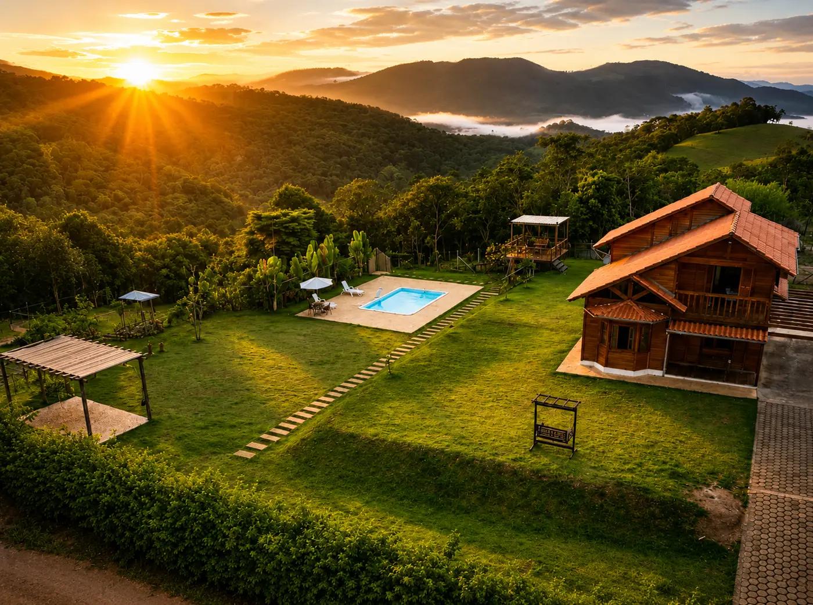
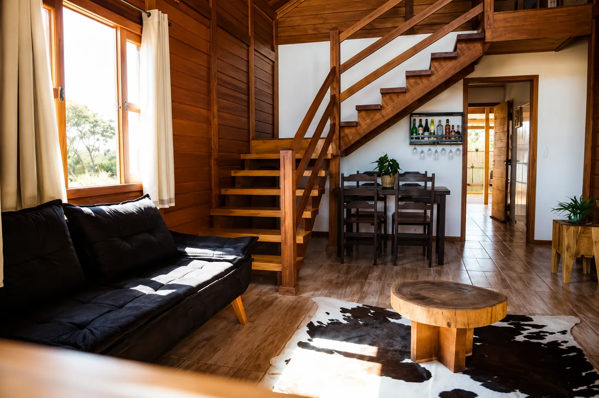
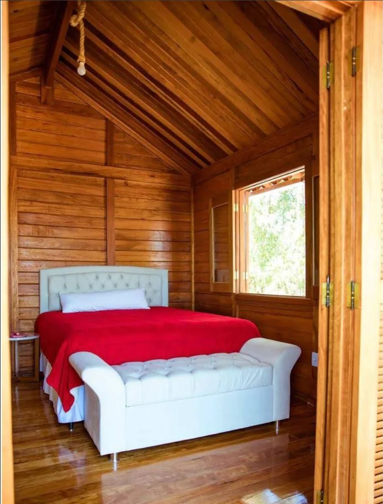
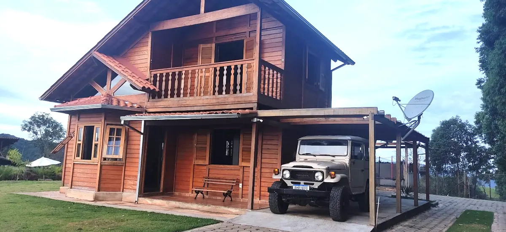
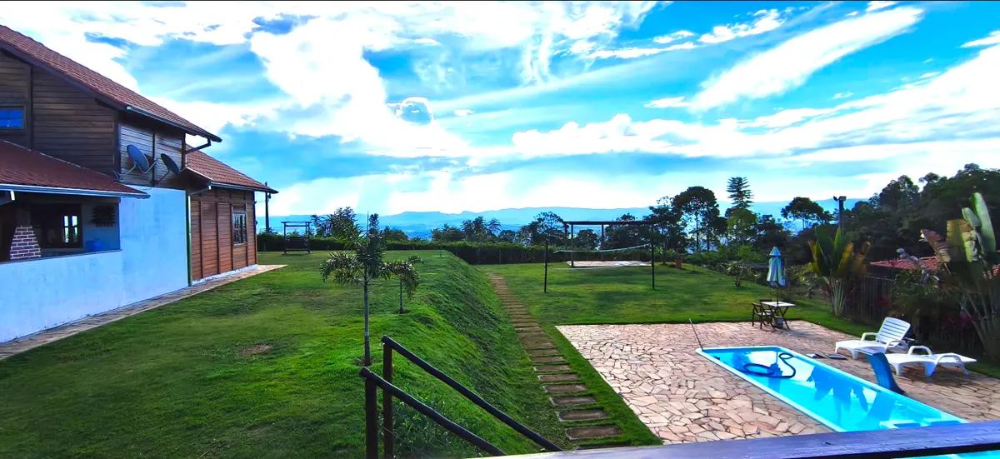
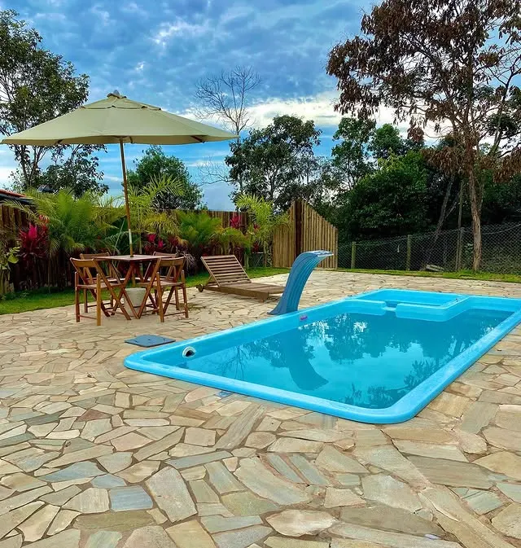
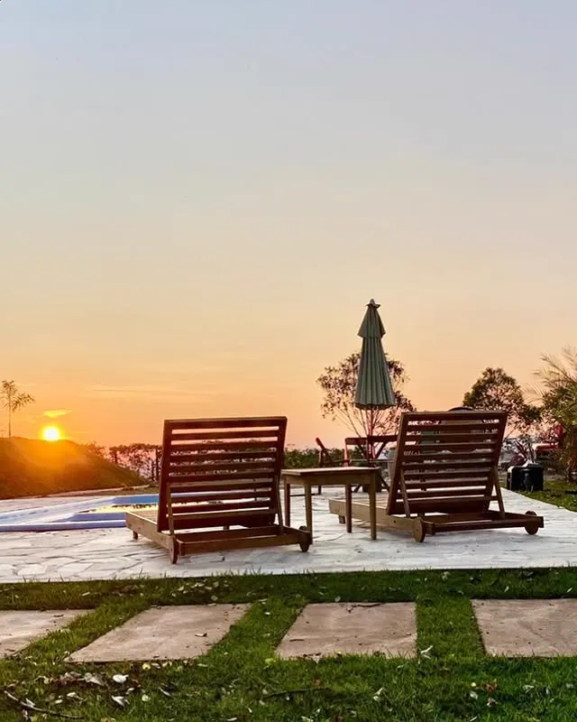
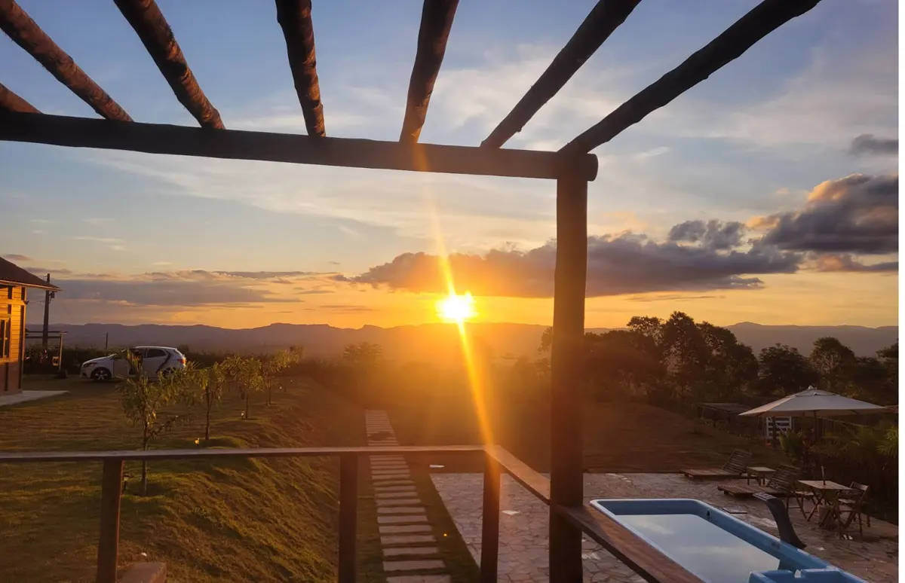

Fim de semana
Quatro quartos, cozinha à disposição e nenhum vizinho por perto. Chegar na sexta, acordar com a serra na janela e não ter hora pra nada até domingo.
Ver datas livres →

Rancho Canaã · Itabira, MG
Role para entrar ↓
Casa de madeira, piscina e o pôr do sol inteiro só pra você
Tem quem chegue com mala pra três dias. Tem quem chegue de vestido, faça as fotos e vá embora antes de escurecer. O rancho atende os dois — só faz questão de que ninguém perca o pôr do sol.
Quatro quartos, cozinha à disposição e nenhum vizinho por perto. Chegar na sexta, acordar com a serra na janela e não ter hora pra nada até domingo.
Ver datas livres →Aniversário, bodas, batizado, confraternização de família. Área gourmet coberta com churrasqueira, deck e jardim — do tamanho de quem cabe na mesa, não de salão de eventos.
Ver se a data está livre →Pré-wedding, gestante, família, debutante. Madeira, contraluz e um horizonte sem poste no meio — é por isso que os fotógrafos da região voltam aqui.
Agendar sessão →Sala com escada aparente e mezanino, mesa posta pra todo mundo sentar junto, e a varanda do andar de cima olhando a serra. São quatro quartos, um deles suíte, e dois banheiros sociais.


A casa é onde se dorme. O rancho de verdade é o que tem em volta dela: piscina com deck de pedra e guarda-sol, área gourmet coberta com churrasqueira e bancada, e um deck de madeira com cadeira de balanço virado pra mata.



Sendo uma suíte, mais dois banheiros sociais. Cabe a família inteira e ainda sobra cama.
Com cascata, deck de pedra, guarda-sol e espreguiçadeiras viradas pro pôr do sol.
Coberta, com churrasqueira e bancada. Chova ou faça sol, o churrasco de domingo sai.
Deck suspenso e coberto, com escada própria, virado pro vale. É de lá que se vê o dia acabar.
Garagem coberta ao lado da casa e espaço de sobra no gramado pra quem vier em mais carros.
O rancho fica na parte alta, sem vizinho na frente e sem morro tampando o horizonte.

O rancho fica na parte alta, virado pro horizonte. Não tem prédio, não tem morro na frente. Por volta das seis, todo mundo para o que está fazendo e vai olhar.
As avaliações repetem sempre as mesmas coisas: a vista, o silêncio e o aconchego da casa de madeira. Logo depois vem o elogio aos donos — “atenciosos” aparece quase tanto quanto “aconchegante”.
“Chalé com ótima infraestrutura, ambiente aconchegante e extremamente tranquilo. Ideal para descansar, ter contato com a natureza e recarregar as energias.”
“Perfeito para quem quer descansar. Além de lindo, é aconchegante e traz uma verdadeira sensação de paz.”
“Que lugar maravilhoso. Proprietários super educados e atenciosos. Hiper recomendo.”
É lá que saem as fotos novas, os pôr do sol da semana e os ensaios feitos aqui.
Quem já veio costuma remarcar na saída. Manda a data que você tem em mente e a gente confere na hora se ainda está livre — a reserva é combinada direto no WhatsApp, sem formulário e sem cadastro.